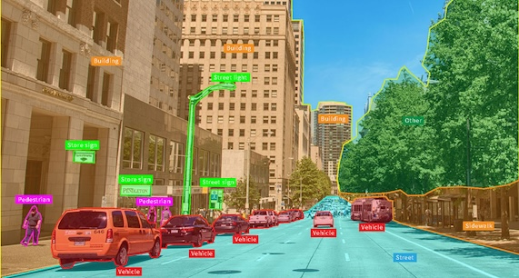
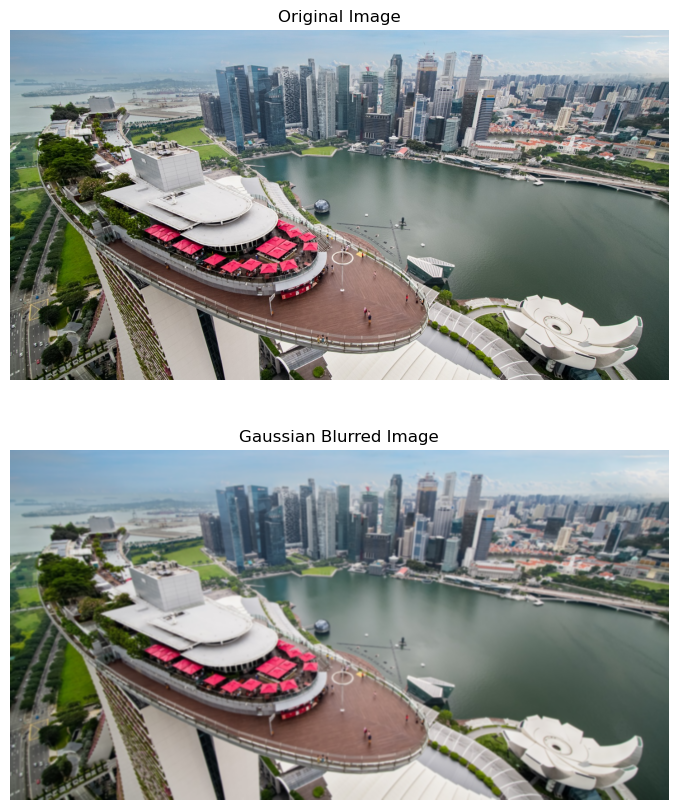
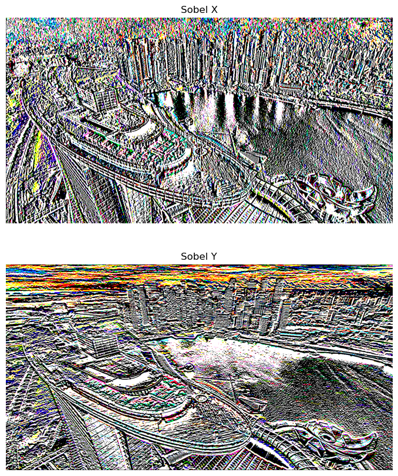
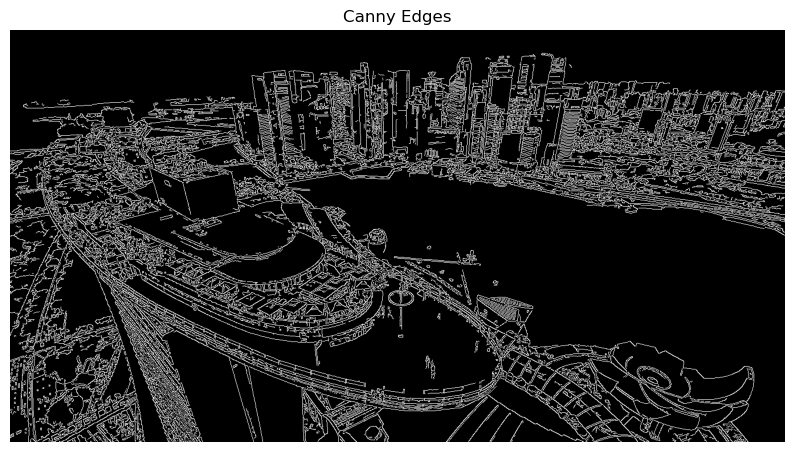
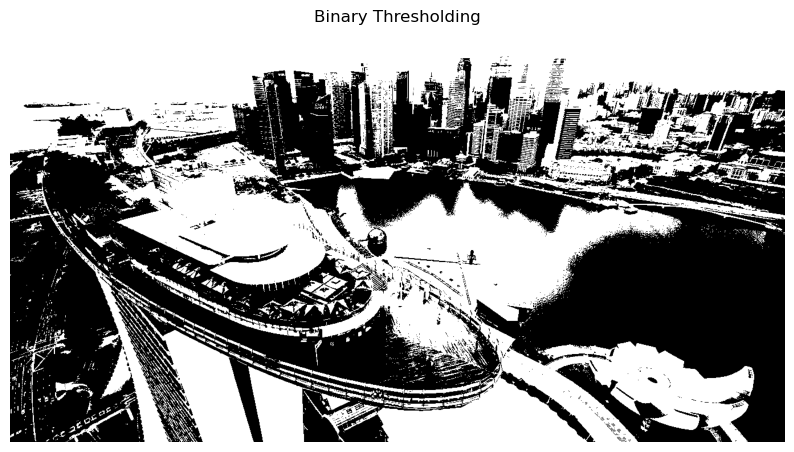
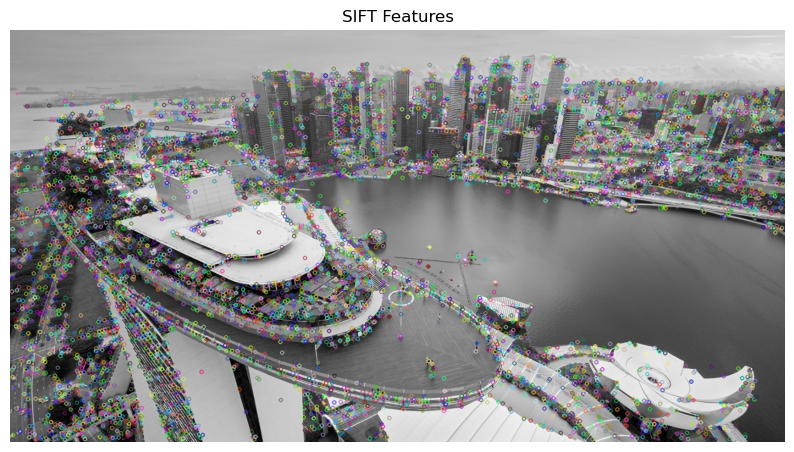
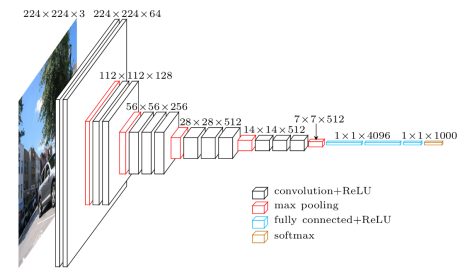
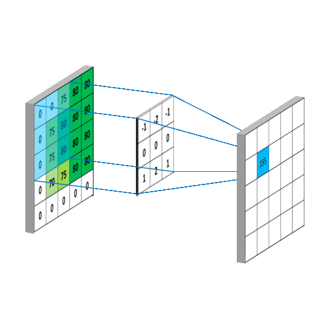
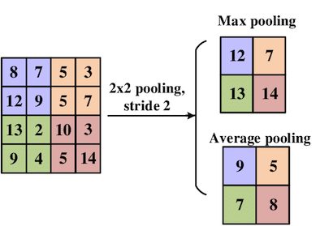
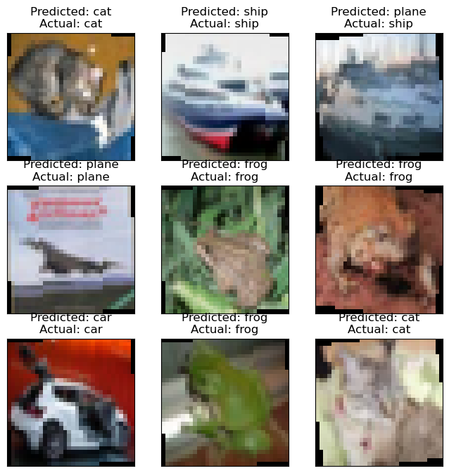

What this lesson covers
This lesson walks from raw pixels to a trained image classifier. It starts with classical image processing (reading/writing images, color spaces, filtering, edge detection, segmentation, feature extraction), moves into Convolutional Neural Network (CNN) architecture and training with PyTorch on CIFAR-10, and finishes with transfer learning using a pre-trained ResNet. Use the pipeline above or the tabs below to jump to any part.
Lesson Plan
| Duration | What | How / Why |
|---|---|---|
| 5 mins | Start zoom session | So learners can join early and start on time. |
| 20 mins | Activity | Recap on self-study and prework materials. |
| 40 mins | Code-along | Part 1: Introduction to CV and Image Processing. |
| 30 mins | Code-along | Part 2: CNN architecture. |
| 10 mins | Break | — |
| 20 mins | Code-along | Part 3: Training CNNs. |
| 50 mins | Code-along | Part 4: Transfer Learning and Pre-trained Models. |
| 10 mins | Briefing / Q&A | References, assignment, quiz and Q&A. |
What is Computer Vision?
Computer vision is a field of AI that enables computers to interpret and understand the visual world, combining image processing (acquiring, analyzing, enhancing images) with machine learning (learning from and deciding based on visual data). Its scope includes image classification, object detection, object tracking, image segmentation, image restoration, scene reconstruction, event detection, image captioning, and pattern recognition.
Brief history: early automated object-recognition systems date to the 1950s, with major advances in the 1970s–80s as algorithms and compute improved. Machine learning and feature extraction matured through the 1990s–2000s, and the 2010s introduction of deep learning — especially CNNs — revolutionized classification and detection.

Applications: Healthcare (diagnosing disease from X-rays/MRIs/CT scans), Automotive (autonomous vehicles, ADAS), Retail (consumer behavior, inventory, virtual fitting rooms), Manufacturing (quality control, defect detection), Agriculture (crop monitoring, automated harvesting), Security (surveillance, facial recognition), Entertainment (AR/VR), Smartphones (face unlock, camera AR).
Reading, Writing, and Displaying Images
The notebook covers two libraries: PIL (Pillow), a friendly library for opening, manipulating and saving many image formats (JPEG, PNG, BMP, TIFF, ...), and OpenCV, a more advanced computer-vision-focused library that also handles basic image I/O. A key gotcha: OpenCV reads images in BGR order by default, so images must be converted to RGB before displaying with matplotlib.
An image is fundamentally a grid of pixels — the smallest controllable picture elements, each holding color information, most commonly in the RGB color space.
Color Spaces and Conversions
Images can be converted between color spaces with either library — e.g. RGB to grayscale, or RGB to HSV (hue/saturation/value), which is often more convenient than RGB for tasks like color-based thresholding.
.convert('LA'))cv2.COLOR_BGR2GRAY)Image Filtering & Convolution
Image filtering enhances or suppresses features in an image. Convolution applies a small kernel (filter) over the image to produce a filtered output — the same core operation CNNs later learn to apply automatically.
Gaussian Blur
A smoothing technique that reduces noise and detail by convolving the image with a Gaussian-weighted kernel, blurring while preserving edges better than a simple mean filter.

Edge Detection: Sobel & Canny
Sobel convolves the image with a pair of 3x3 kernels (x- and y-direction gradients) and combines them into an edge-strength map. Canny is a multi-stage detector: Gaussian noise reduction → gradient calculation → non-maximum suppression → double thresholding → edge tracking by hysteresis. Canny is generally better at localizing edges and more robust to noise.


Image Segmentation: Thresholding
Thresholding converts a grayscale image into a binary image: pixels above a threshold become one value (e.g. white), pixels below become another (e.g. black) — a simple way to separate an object from its background.

Feature Extraction: HOG, SIFT, SURF
HOG (Histogram of Oriented Gradients) counts gradient-orientation occurrences in localized regions — strong for human detection. SIFT (Scale-Invariant Feature Transform) detects and describes local keypoints that are scale- and rotation-invariant, useful for matching across different views. SURF is a faster, patented variant of SIFT using integral images and a Hessian-matrix-based detector.

CNN Architecture Overview
A typical CNN is built from: an Input Layer (raw pixels), Convolutional Layers (the core feature-extracting building block), an Activation/ReLU Layer (adds non-linearity), Pooling Layers (reduce spatial size/parameters), Fully Connected Layers (combine features for classification), and an Output Layer (class probabilities).

Convolutional Layers
A convolution slides a small kernel (matrix of weights) across the image, computing a dot product at each position to produce a feature map highlighting patterns like edges or textures. Padding (commonly zero-padding) preserves spatial dimensions at the borders; stride controls how many pixels the kernel moves each step — larger strides shrink the output.

Hierarchical Feature Learning
CNNs learn a hierarchy of features automatically: early layers learn low-level features (edges, basic textures), middle layers learn mid-level features (shapes, textural patterns), and deep layers learn high-level features (entire objects/scenes). ReLU is the standard activation used after convolutions for its efficiency and effectiveness.
Pooling Layers & Spatial Hierarchy
Pooling reduces the spatial size of feature maps (and the parameter count), which helps control overfitting, by summarizing regions of the feature map.

Max pooling (most common) slides a window (e.g. 2x2) over the feature map and keeps the maximum value in each window. Average pooling takes the mean instead — less common, but sometimes useful. Progressive pooling builds a spatial hierarchy: early layers see local patterns, deeper layers see increasingly global ones.
Fully Connected Layers & Classification
After the convolution/pooling stack, a CNN typically transitions to fully connected (FC) layers, where every neuron connects to all activations in the previous layer — just like a standard neural network. The FC stack takes the high-level features learned earlier and uses them to classify the input.
The final FC layer has one neuron per class, and a softmax activation converts the raw outputs into a probability distribution over the classes.
Training Techniques: Augmentation, BatchNorm, Dropout
Data Augmentation increases training-set diversity via random transformations (rotation, scaling, translation, flipping, cropping) — helping the model generalize.
Batch Normalization normalizes each layer's inputs to zero mean / unit variance (with learned scale & shift), combating internal covariate shift and enabling higher learning rates and faster convergence.
Dropout randomly zeroes a fraction of a layer's outputs during training, a regularization technique that reduces overfitting by preventing co-adaptation of neurons.
Training a CNN with PyTorch on CIFAR-10
The notebook builds a SimpleCNN (a PyTorch nn.Module) and trains it on the CIFAR-10 dataset (60,000 32x32 color images across 10 classes: plane, car, bird, cat, deer, dog, frog, horse, ship, truck).
The data pipeline: define transforms for data augmentation → load train/test datasets → wrap them in PyTorch DataLoaders for batching and shuffling → define a loss function and optimizer.
The Training Loop
For each epoch, the training function iterates over batches from the training DataLoader: forward pass through SimpleCNN → compute loss against the true labels → backpropagate gradients → step the optimizer to update weights. Data augmentation and batch normalization (introduced in Part 2) are applied during this process to improve generalization and training stability.
Evaluating the Model
After training, the model is evaluated on the held-out test set to measure accuracy on unseen data. The notebook then samples random test images and displays each with its predicted class alongside the actual class, making it easy to spot correct vs. incorrect predictions at a glance.

Transfer Learning
Transfer learning reuses a model developed for one task as the starting point for a second task — instead of training from scratch. Models pre-trained on huge benchmark datasets like ImageNet (1M+ images, 1000 categories) offer three main benefits: time-saving (skip most of the training time), improved performance (especially with limited new-task data), and reusable feature extraction (learned features transfer even to different classes).
Popular pre-trained CNN architectures include LeNet-5, AlexNet, VGGNet, GoogLeNet (Inception), and ResNet.
ResNet (Residual Network)
ResNet was designed to make training very deep networks practical by solving the vanishing-gradient problem. Its core idea is the residual block: a skip connection lets the input bypass one or more layers and be added back to their output, so gradients can flow directly through the network during backpropagation. ResNet also applies batch normalization after every convolution.
Common depths are ResNet-18, 34, 50, 101, and 152 (the number = layer count). ResNet-18/34 use basic residual blocks (two 3x3 convolutions); ResNet-50/101/152 use bottleneck blocks (1x1 → 3x3 → 1x1 convolutions) to reduce computational cost at greater depth.
Feature Extraction vs. Fine-Tuning
Feature Extraction: use the pre-trained ResNet as a fixed feature extractor — replace only the final fully connected layer (model.fc) with a new one for your task, freeze everything else, and train just that new layer.
Fine-Tuning: unfreeze some or all of the pre-trained layers and continue training on the new dataset at a very low learning rate, letting the model adjust its learned representations to the new task.
The notebook applies this to CIFAR-10 using a pre-trained ResNet, replacing the final layer for the 10 CIFAR-10 classes. Full training runs are computationally heavy on CPU and are recommended to run on GPU (e.g. Google Colab).
Course Materials
- Self-Study Preparation Guide — pre-class reading and reflection tasks (~45-60 min)
- Lesson Brief — environment setup and in-class notebook instructions
- Assignment — build a Fashion MNIST image classifier
- Reference — external documentation links
- Lesson Notebook — the full code-along notebook this summary is based on